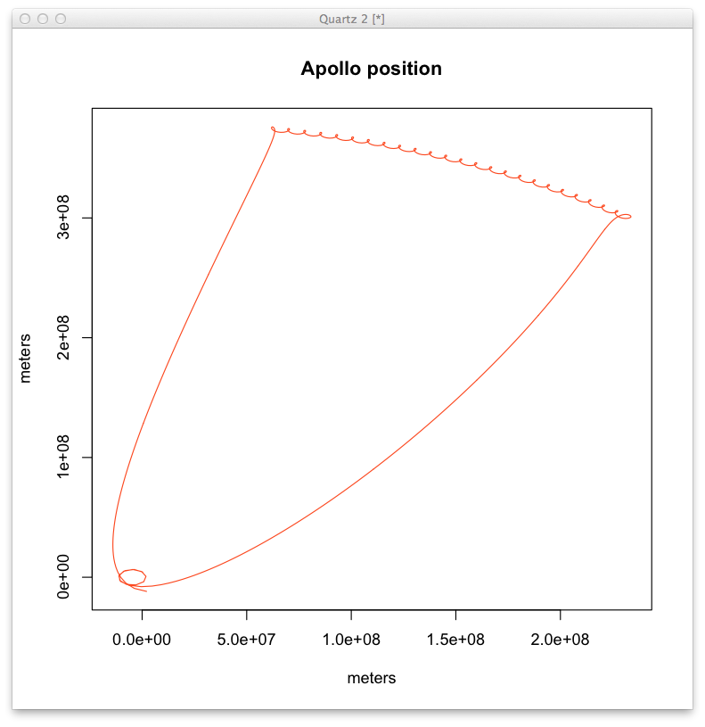
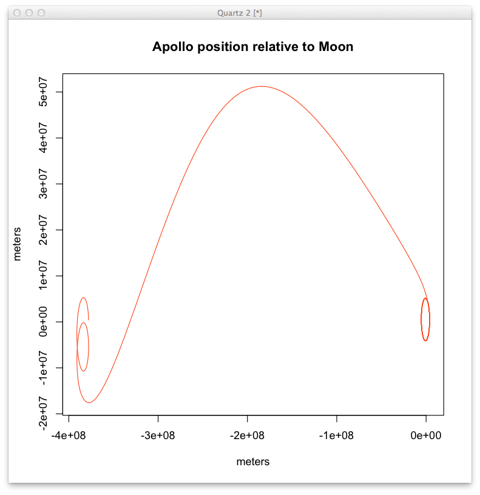
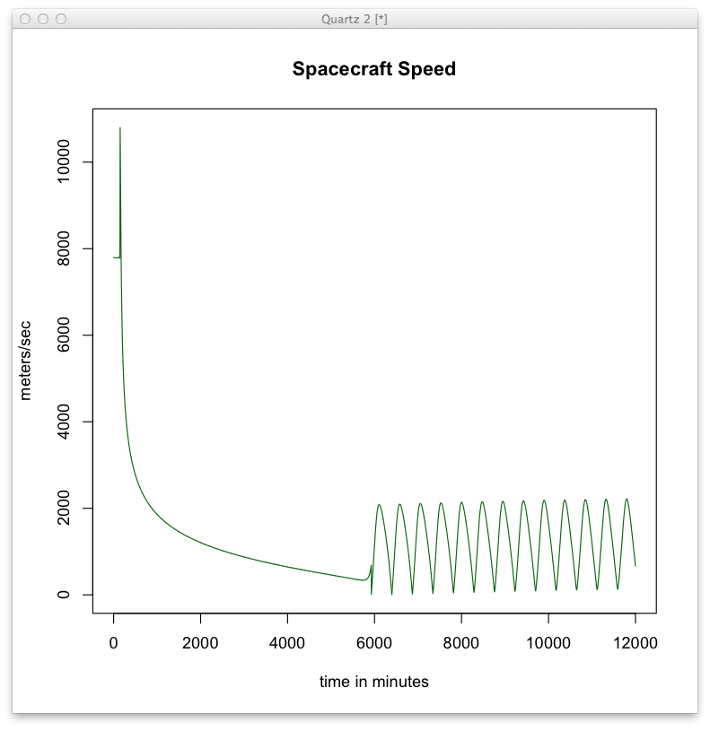

2014 Mar 08
In this QuickTime example I add a Lunar Orbit Injection (LOI) burn to bring the Apollo spacecraft into lunar orbit. This does not include lunar orbit circularization yet. To see that the orbit is elliptical I re-ran the xml file through my python parser and plotted position relative to the moon below. I also plotted the magnitude of the velocity vector to find the speed a the end of the TLI burn. I was pleased to see that after accounting for propellant used in the parking orbit insertion it was 10,799.13 meters/second, within 0.4% of the published value of 35,533 fps at TLI cutoff.


